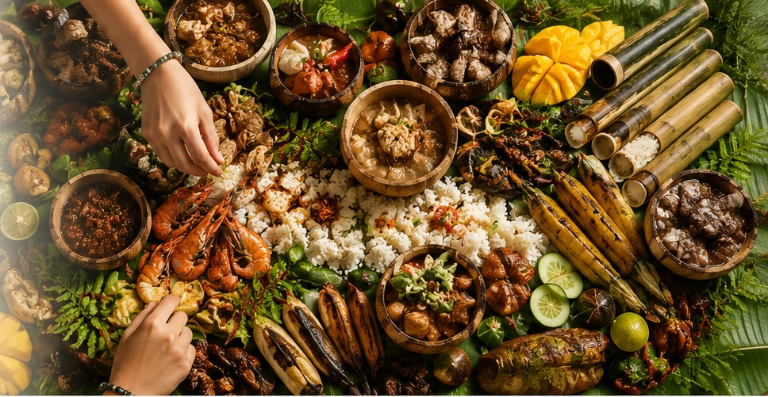

Rice down the middle
Steaming rice forms the heart of the spread and gives everyone a place to start.
FOOD · CULTURE · TOGETHERNESS
Forget plates, cutlery and formal dining. A Filipino Boodle Fight is a shared feast laid across banana leaves — rice, grilled meat, seafood, vegetables, fruit and local dishes — with everyone gathering around the same table and eating with their hands.

WHY IT IS MORE THAN A MEAL
The modern Boodle Fight is strongly associated with the Philippine military, where soldiers gathered around a shared spread and ate together without the usual hierarchy of a formal table. The idea came to represent camaraderie, equality and sharing.
Today, the same style of communal feast is enjoyed by families, friends, communities and visitors. The food is usually arranged along banana leaves and eaten kamayan-style — with clean hands instead of knives and forks.
The name sounds like a competition. The experience is really the opposite: everybody shares the same table.
WHAT COULD BE ON THE TABLE
Every Boodle Fight can be different. For a Sogod Stay version, we would build the meal around what is fresh, available and appropriate for your group.
Steaming rice forms the heart of the spread and gives everyone a place to start.
Chicken, pork, fish or other grilled dishes bring the smoky, festive part of the table.
Prawns, fish or other local seafood can make the feast feel unmistakably coastal.
Laing or other coconut-and-chilli Bicol dishes can bring real regional character.
Mango, tomatoes, vegetables and dipping sauces add freshness and color.
Wash well, gather around the leaves and eat kamayan-style. That is where it becomes memorable.
Friends, family or fellow travelers come together around one table.
The whole spread is communal instead of divided into individual plates.
Use your hands, try unfamiliar dishes and enjoy the informal atmosphere.
It is the kind of meal people photograph, talk about and remember afterwards.
THE SOGOD STAY VERSION
A Boodle Fight can work beautifully after a day at Mayon, an island trip or simply as the main experience of an evening. We can help arrange the food and setup around the size of your group.
✓ Banana-leaf setup
✓ Menu confirmed around your group
✓ Bicol flavors can be included
✓ Mild options can be arranged
✓ Tell us about allergies or dietary restrictions
DON'T JUST VISIT THE PHILIPPINES
Add a Boodle Fight to your Sogod Stay request and we can shape the meal around your group.
I want to try a Boodle Fight